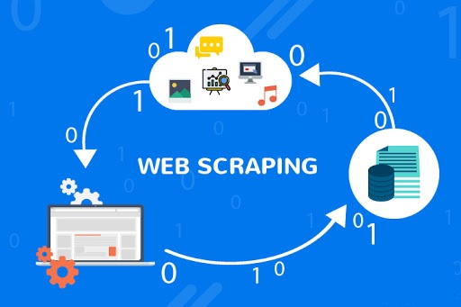
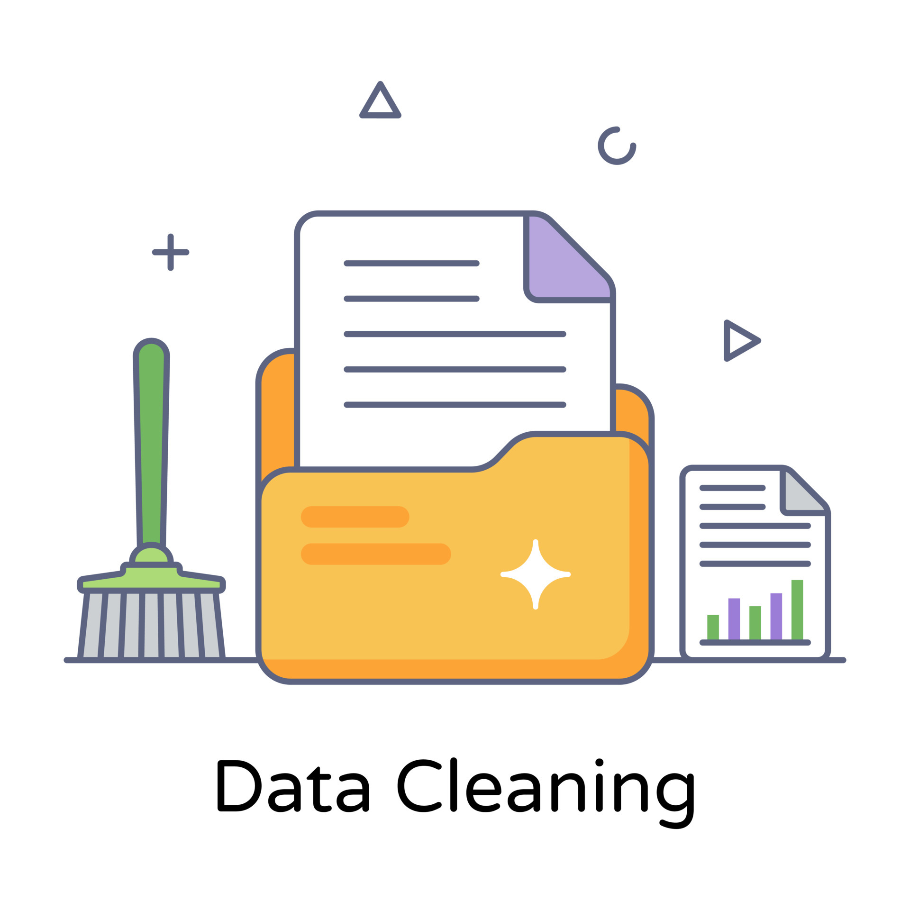

POSTGRESQL
- Database:: Created a PostgreSQL database and designed its schema with tables and relationships.
Developed an Entity-Relationship (ER) diagram to visualize the schema.
-Analysis Tools: I utilized a wide range of SQL techniques, ranging from beginner to advanced, including JOINs, Views, CTEs, Functions, Operators, Aggregating Functions, and many more, to perform in-depth data analysis.
- Security: Implemented Permissions to control access and ensured the protection of sensitive information.
- Best Practices: Best Practices: Followed industry-standard database design principles, documented the database structure and queries, maintained consistent coding practices, and performed database backup.

- Wikipedia Web Scraping.
- Top 100 Largest Companies in the USA by Revenue.
- Scrape information by using BeautifulSoup.
- HTML inspecting and data harvesting.
- Prepare the data to be analyzed.
- Exploratory data analysis.
- Visualization(Pandas, Matplotlib).
- Imported the insights into CSV file.
- Email CSV file
- Imported the CSV file into PostgreSQL.
- Data Analysis on PostgreSQL.
- Import relevant libraries(yfinance,Datetime).
- Financial assets performance analysis.
- Fetch historical financial assets data.
- Calculate Up to date returns.
- Linear Regression model.
- Calculate 200-Day and 50-Day EMA.
- Calculate Price Range Widening.
- Standard Deviation.
- Calculate Price Predictions.
- Statistical Analysis.
- Visualize Data(Matplotlib, Seaborn).
- Analysis Insights.
- Libraries: Pandas, Matplotlib, Numpy, OS.
- Geopandas library for Geospatial Analysis.
- Data Cleaning.
- Exploratory analysis.
- Countries x Frequency of Appearance.
- Wine Varieties x Frequency of Appearance.
- Most Expensive Wines.
- Most Expensive Wines x Average Prices.
- Highest points and price values.
- Italian Wines Analysis.
- Cost(Price) x Benefit(Points).
- Diverse range of insights.
- Saving relevant analysis into CSV file.
- Emailing the CSV + Image + Insights.
- Italian Wine Recommender(Static - Github).
- Web App based on my Wine Reviews Analysis project.
- Front-End Development:
HTML, CSS.
JavaScript: jQuery.
- Back-End Development:
Python:
Pandas, scikit-learn(NLP), Flask, Googletrans.
- Data Storage:
CSV File: Dataset used for recommendations.
- ~ 5.000 Italian Wines ( Score > 90/100).
- Statistical Match: Top 10 most similar wines.

- Housing market dataset.
- Project entirely focused on data cleaning.
- Database creation.
- Import CSV file into PostgreSQL.
- Exploratory analysis in order to identify the data to be cleaned.
- CTE expression to remove duplicated values.
- Populate "Null" fields by reference.
- Delete unused columns.
- Database backup.

- Microsoft Power BI interactive dashboard.
- Active and inactive worker’s performance
- KPI analysis.
- Salary, department, and position analysis.
- Data cleaning, data modeling.
- Power Query to prepare the data to be loaded.
- Microsoft Power BI interactive dashboard.
- Compare the data between different doctors, units, calls, and patients.
- Data cleaning, data modeling, ETL.
- Processed data by using Power Query, DAX and Excel.
- Ensure data completeness and validity.
- Data analysis.
- Microsoft Power BI interactive dashboard.
- Contents dating back from 2008.
- Data cleaning, data modeling, ETL.
- Implementing filter and details tabs.
- Movies and Series by Genres, Top countries, Temporal.
- Data analysis.
The%20Italian%20Wine%20Recommender.gif){kind=link}